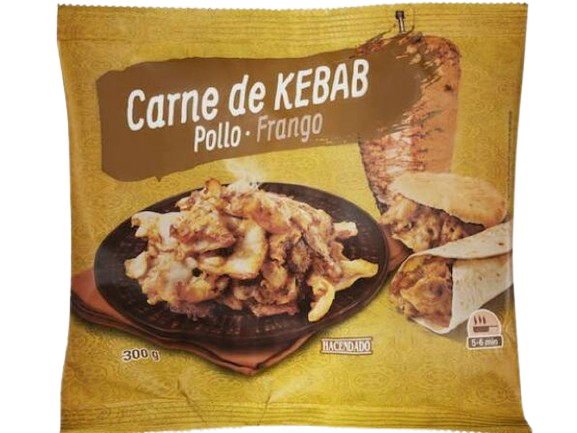
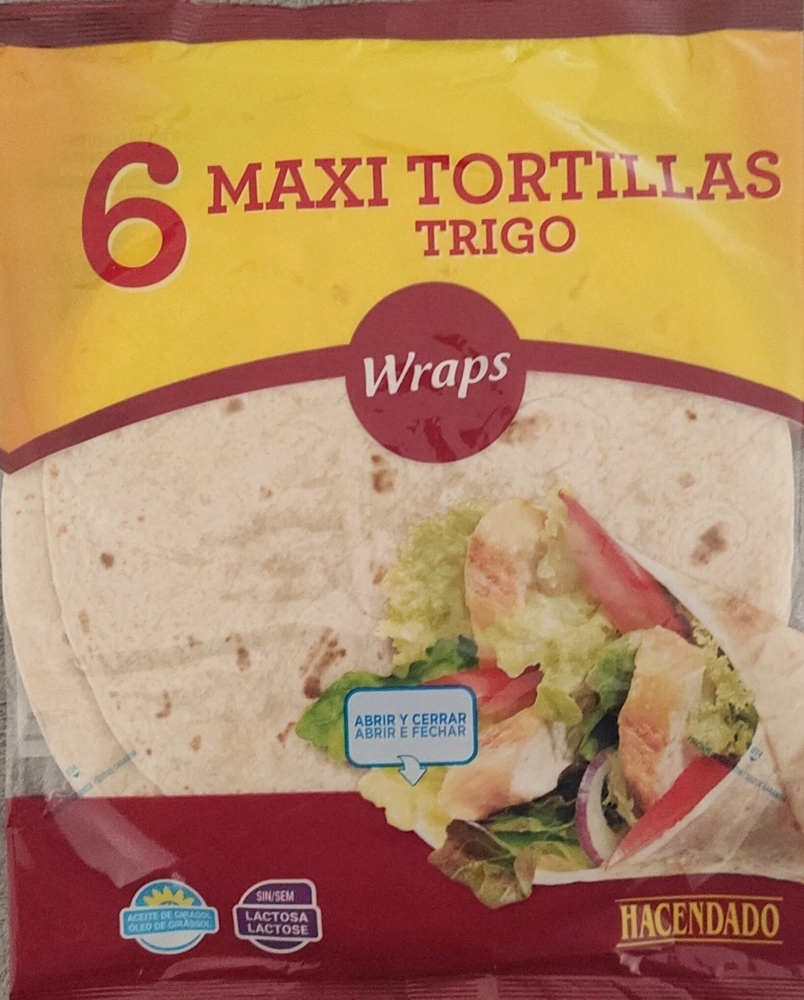
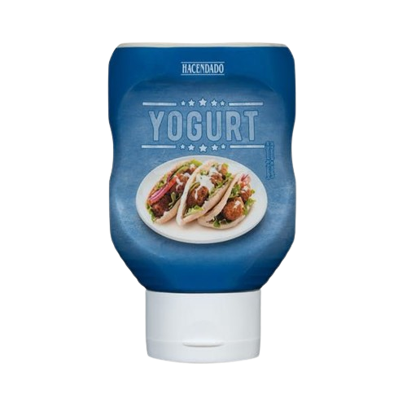

Durum
Ingredientes
Para preparar un durm desde casa, necesitaremos:
Volver al inicio
Ir a la preparación
Ir al precio
Ir al video
- Relleno de kebab del Mercadona. (300g)

- Tortillas de trigo maxi Mercadona. (3 unidades)

- Salsa de yogurt del Mercadona. (opcional)
